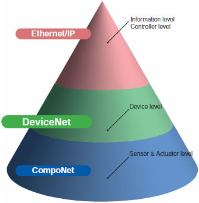
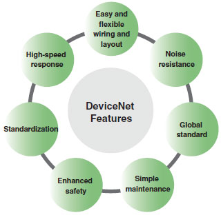
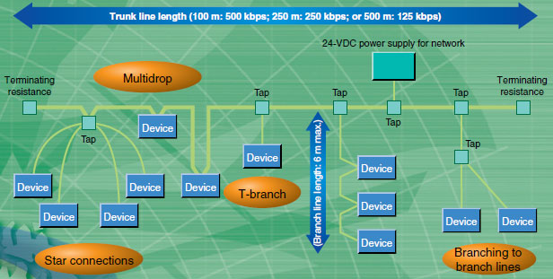
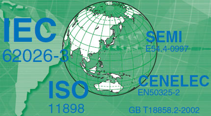
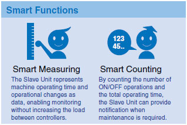
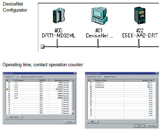
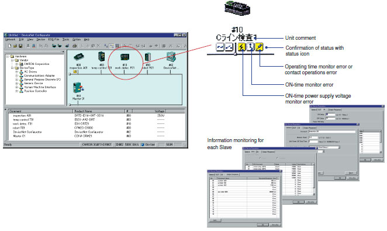
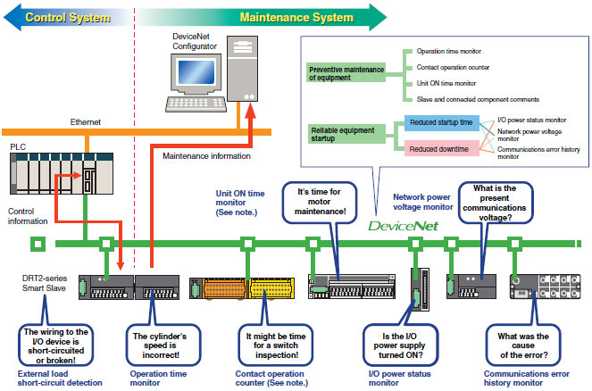
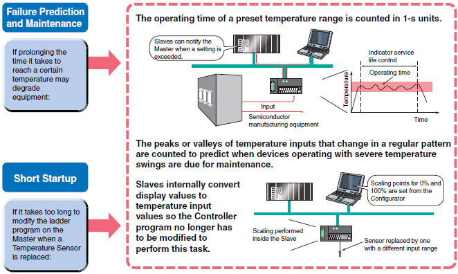

DeviceNet is a field network that easily performs mutual connections between control devices, such as PLCs, computers, and sensors, as well as data devices, such as barcode readers and RFID Systems.
DeviceNet is a standardized network that enables intelligent control of field devices and improves system productivity.
Building Automation
Industrial Automation
Power Automation & Safety


Bangladesh Distributor
DeviceNet
Multi-vendor Network
DeviceNet is a standardized network that enables intelligent control of field devices and improves system productivity.
about this Product Family
Related Contents
- Automation Systems
- Features
- Lineup
- Specifications
- Dimensions
- Catalog
last update: June 27, 2013
What Is DeviceNet?


Superior installation performance enables easy and flexible wiring and layout.
DeviceNet covers a wide array of FA applications, ranging from the sensor or device level to the controller level. With its superior installation performance, DeviceNet easily achieves mutual connections between sensors and other control devices in one network as well as reducing costs and shortening lead time in many aspects of manufacturing, ranging from design and manufacture of equipment and lines to installation, operation, and maintenance.

Accelerating the Global Standardizations Required by Industry in This Age of Global Manufacturing
DeviceNet has been the leader in standardization required for this age of borderless manufacturing as a standard for a variety of countries and industrial organizations, such as with standard sensor bus certification by the SEMI industrial association and compliance with IEC, an international global standard. Equipment and lines at manufacturing sites overseas can be constructed and operated in the same way as at sites in Japan without the need for training on wiring rules or detailed explanations.

Support for Creating Maintenance and Safety Systems
Support is provided for creating maintenance systems that provide failure prediction as preventive maintenance to reduce equipment downtime, which is a constant issue at manufacturing sites.
Using DeviceNet lets you create safety control networks and program logic. Monitoring with safety controls makes maintenance easier.
DRT2-series Smart Slaves are Intelligent Slaves with Powerful Support for Your Networks from Installation
OMRON DRT2-series Smart Slaves decrease total costs and reduce work when used in a variety of manufacturing site applications, such as maintenance and quality control. The Slave Units monitor the network's power supply voltage and communications errors, which can be easily read using Support Software. In addition, the number of ON/OFF operations and total operating time of the devices wired to the slave are counted at the slave, which enables providing notification when maintenance is required.
Machine Operation Monitored by Slaves

Easy-to-view Display

Improve Maintenance Efficiency
The Slave can hold comments, allowing quick identification of fault locations and faulty devices.


Note: The contact operation counter function and the unit ON time monitor function cannot be used simultaneously.
Using OMRON Temperature Input Terminals for Maintenance

Complies with the Highest Safety Standards in the World
The CIP Safety on DeviceNet System conforms to IEC 61508 SIL3 for functional safety, and EN 954-1 Safety Category 4 for machine safety, complying with the world's highest level of safety standards.
IEC 61508 SIL 3
Safety circuits must be able to function to provide safety at anytime. Conversely, the degree of lack of safety is used as the indicator. In IEC 61508, safety is defined as the Probability of Failure per Hour, or PFH. Based on this, the SIL (Safety Level) is classified into four levels. SIL 3 indicates a probability of dangerous failure of once in 1,000 years, which is the highest level in machine safety.
EN 954-1 Safety Category 4
EN standards evaluate the level of machine risk and require the incorporation of risk minimization measures. In EN 954-1, five safety categories have been established, with Safety Category 4 indicating designs that require the highest safety design level. This category is demanded for machines with the highest level of danger, wherein "serious injury (severed limbs, death, etc.) will occur frequently, with little chance of escaping danger." This category demands that a single fault (failure) in any part of the machine, or a series of faults, will not lead to loss of the machine's safety functions.
last update: June 27, 2013